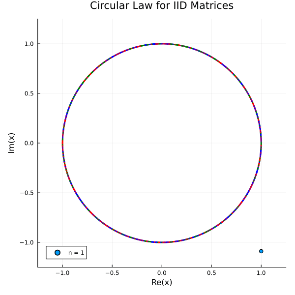

Matrices with IID Entries
Diagonal Matrices
RandomMatrix.randDiagonal — Function
randDiagonal(d, n)
randDiagonal(n) d: defaultNormal(0，1), entry distributionn: dimension
Examples
Generates a 3 by 3 diagonal matrix, with non-zero elements from Normal(0,1)
randDiagonal(3)
3×3 Diagonal{Float64, Vector{Float64}}:
0.440359 ⋅ ⋅
⋅ 1.94832 ⋅
⋅ ⋅ -0.52536Generates a 5 by 5 diagonal matrix, with non-zero elements from Poisson(2)
randDiagonal(Poisson(2),5)
5×5 Diagonal{Int64, Vector{Int64}}:
1 ⋅ ⋅ ⋅ ⋅
⋅ 0 ⋅ ⋅ ⋅
⋅ ⋅ 0 ⋅ ⋅
⋅ ⋅ ⋅ 3 ⋅
⋅ ⋅ ⋅ ⋅ 3Triangular Matrices
RandomMatrix.randTriangular — Function
randTriangular(d , n ; diag , Diag, upper )
randTriangular(n;diag, upper)d: entry distributionn: dimensiondiag: defaultdiag = d, diagonal entry distributionDiag: defaultDiag = true,trueincludes diagonal,falsewith diagonal entries 0upper: defaultupper = true,truegives upper triangular,falsegives lower triangular
Examples
Generate an upper triangular matrix with entries Standard Normal
randTriangular(3)
3×3 UpperTriangular{Float64, Matrix{Float64}}:
-0.572757 -0.459518 -1.60622
⋅ 0.0216834 -0.416529
⋅ ⋅ -1.00807Generate a 3 by 3 strictly lower triangular matrix, with nonzero entries uniform from $\{1,2,3\}$
randTriangular(1:3,3,upper=false,Diag=false)
3×3 LowerTriangular{Int64, Transpose{Int64, Matrix{Int64}}}:
0 ⋅ ⋅
3 0 ⋅
3 2 0Full Matrices
RandomMatrix.randMatrix — Function
randMatrix(d::D, n::Int, m = n::Int; norm = false::Bool) where D<:S
randMatrix(n::Int, m = n::Int; norm = false::Bool)d: entry distributionn,m: defaultm = n, dimensionsnorm: defaultfalse, ifnormset totrue, then the matrix will be normlaized with $\operatorname{min}(n,m)^{-1/2}$.
Examples
Generates a 2 by 2 random matrix with entries from the Standard Gaussian.
randMatrix(2)
2×2 Matrix{Float64}:
1.74043 -1.30317
0.72765 0.639943Generates a 3 by 2 random matrix with entries uniformly from {1,2,3,...,10}.
randMatrix(1:10,3,2)
3×2 Matrix{Int64}:
1 3
6 4
10 1Generate a normalized random 2 by 2 Matrix with entries Poisson(2) rvs. Need to import the Distributions package for Poisson(2)
using Distributions
randMatrix(Poisson(2),2,norm = true)
2×2 Matrix{Float64}:
1.41421 0.0
0.707107 1.41421RMT: Circular Law
Let $\left(X_{n}\right)_{n=1}^{\infty}$ be a sequence of $n \times n$ matrix ensembles whose entries are i.i.d. copies of a complex random variable $x$ with mean $0$ and variance $1$. Let $\lambda_{1}, \ldots, \lambda_{n}, 1 \leq j \leq n$ denote the eigenvalues of $\frac{1}{\sqrt{n}} X_{n}$. Define the empirical spectral measure of $\frac{1}{\sqrt{n}} X_{n}$ as
\[\mu_{\frac{1}{\sqrt{n}} X_{n}}(A)=n^{-1} \#\left\{j \leq n: \lambda_{j} \in A\right\}, \quad A \in \mathcal{B}(\mathbb{C})\]
The circular law asserts that almost surely (i.e. with probability one), the sequence of measures $\mu \frac{1}{\sqrt{n}} X_{n}$ converges in distribution to the uniform measure on the unit disk.
For reference, see for example the paper by Terence Tao and Van Vu: RANDOM MATRICES: THE CIRCULAR LAW
